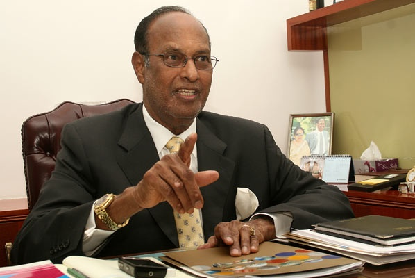

Gunupati Venkata Krishna Reddy

Early life and career
He was born on 22 March 1937 in Kothur village of Nellore district, Andhra
Pradesh. He did his basic schooling from Kothur, early college from Nellore and
graduated from Hyderabad.[5] He
later pursued Owner/President Management (OPM) Program from Harvard Business
School, USA. GVK Reddy has been bestowed with the honorary title, "Doctor of
Philosophy" by the renowned Jawaharlal Nehru Technological University, India.
Reddy began his career by contracting major irrigation projects including
bridges, dams and irrigation canals.
Reddy is also a sports enthusiast and has been consistently encouraging and
nurturing budding young sporting talent. Dr. Reddy has set up a tennis academy
for youth in Hyderabad.
GVK has also come forward to sponsor talented upcoming tennis players from
Hyderabad like Yadlapalli Pranjala, Sama Sathwika and Master Shashank Theertha.
Awards and recognition
- Dr. GVK Reddy has been bestowed with the
'Lifetime Achievement Award' at India Aviation 2014 for his contribution to
Aviation Sector in the country.
- Dr. GVK Reddy won Infrastructure Person of
the Year award at Construction Week India awards.
- Recognized as ‘PowerBrands Hall of Fame
Corporate Luminary of the Year - 2012’.
- Awarded Padma
Bhushan - the third highest
civilian award of India in 2011.
- "Construction World — Man of the year
2011" award by Construction World.
- "Best First Generation Entrepreneur of the
Year 2010" award under the India Business Leaders Awards instituted by CNBC-TV
18.
- Conferred "Entrepreneur of the Year Award
2009" from Economic
Times.
- Under his leadership, GVK won
the "Most Promising Infrastructure Company of the year 2009"award by KPMG.
- Excellence Award at the International
Telugu Cultural Conference held at the Golden Jubilee celebrations of the
Telugu Association of Malaysia.
- Felicitated by The Telugu Literary and
Cultural Association, US.
- Conferred Life Membership of the World
Telugu Federation, Chennai